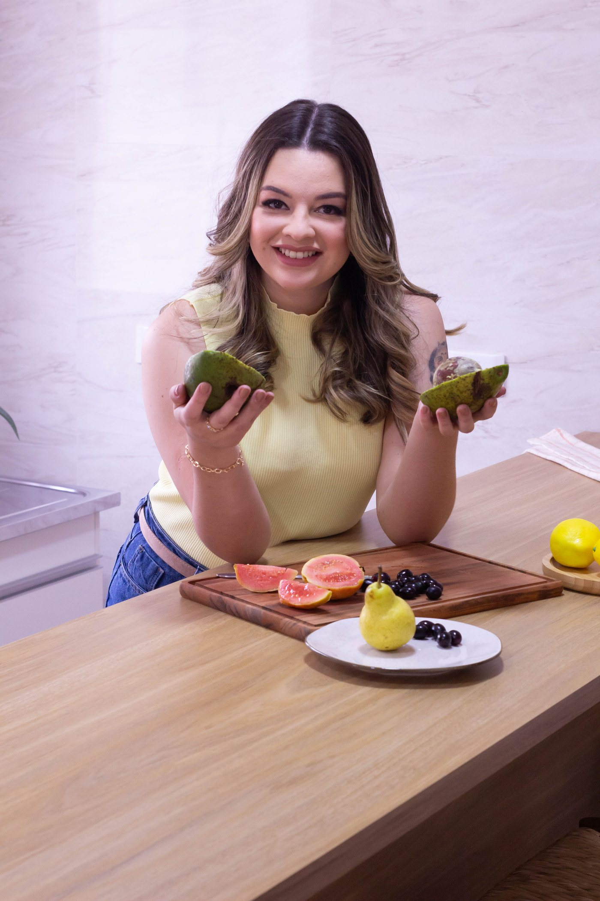
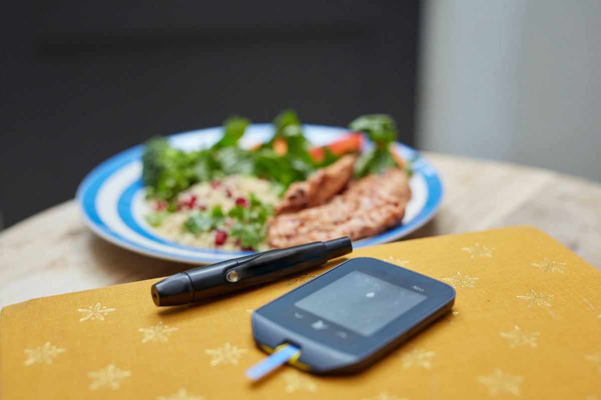
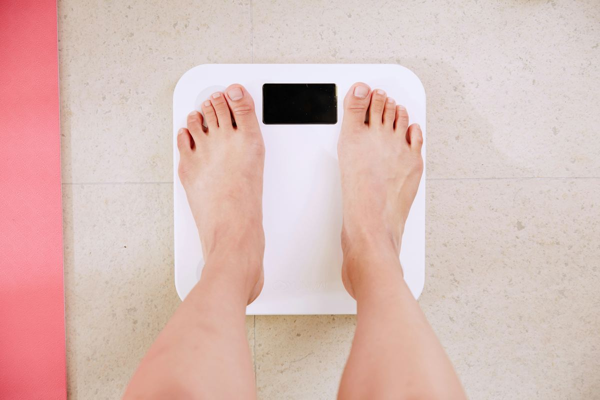
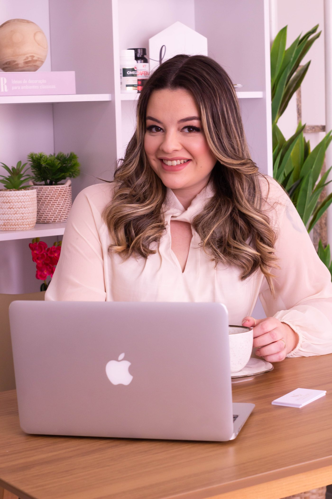

★★★★★
"Tive uma experiência excelente com a nutricionista Nicole! Desde o primeiro atendimento, ela foi extremamente atenciosa, acolhedora e demonstrou muito conhecimento na área."
Larissa Lopes
Avaliação no Google · 7 meses atrás
Nutrição esportiva e estética
Acompanhamento nutricional individualizado com a Dra. Nicole Garcia — sem dietas restritivas, sem julgamentos, com escuta ativa em cada consulta.

O que você busca?
Preservação de massa magra, mais energia, sono de qualidade e prevenção de doenças.
Falar sobre LongevidadeNutrição voltada para o aumento de massa muscular. Hipertrofia com estratégia.
Falar sobre HipertrofiaEstratégia nutricional focada no aumento do desempenho nos treinos e na otimização dos resultados, seja nas sessões diárias, em provas, desafios ou metas pessoais.
Falar sobre Performance
A nutrição como aliada no cuidado e controle de condições como hipertensão, diabetes, esteatose hepática, distúrbios intestinais e doenças autoimunes.
Falar sobre Saúde clínica
Acompanhamento nutricional para redução de gordura com foco na preservação de massa magra.
Falar sobre EmagrecimentoMais saúde e qualidade de vida
Formatos de acompanhamento
Todo acompanhamento começa com escuta ativa e um plano alimentar sem restrições desnecessárias.
Sessão pontual
Para tirar dúvidas, revisar sua estratégia atual ou dar o primeiro passo com orientação profissional.
Quero uma sessão pontualPlano de 90 dias
Plano alimentar personalizado, ajustes de rota e suporte diário para consolidar resultados reais.
Quero o plano de 90 diasPlano de 180 dias
Para transformar hábitos, sustentar performance e manter resultados no longo prazo.
Quero o plano de 180 diasProva social
★★★★★
5,0 · 82 avaliações

Sobre a nutricionista
CRN-3: 56925 · Bacharel em Nutrição · Pós-graduação em Nutrição Esportiva e Estética · Pós-graduanda em Nutrição Materno-Infantil e Nutrição Clínica
"Minha vocação para a nutrição surgiu através do desejo de ajudar pessoas a se sentirem melhor ao se olhar no espelho, e a mostrar que a alimentação saudável não precisa ser um bicho de 7 cabeças."
Cada consulta é feita com escuta ativa, onde o principal foco é o paciente e sua rotina, dificuldades e objetivos. A prioridade é solucionar os problemas de uma forma real e possível, sem restrições desnecessárias.
2019
Início dos atendimentos, em Mauá
2024
Consultório próprio no centro da cidade
"Não desistir é o que vai te fazer conquistar tudo o que sempre sonhou!"
Perguntas frequentes
Vamos conversar?
Atendimento presencial em Mauá – SP e São Paulo – SP.
Atendimento online em todo o Brasil e exterior.
Falar no WhatsApp